library(arrowheadr)
library(ggarrow)
library(ggplot2)
library(ggforce)
library(tibble)
library(dplyr)
library(ggdiagram)
# Make simple plot for reuse
base_plot <- data.frame(x = c(0, 1), y = c(0, 1)) |>
ggplot(aes(x, y)) +
coord_equal()
base_plot +
geom_arrow()The arrowheadr package makes it possible to create create custom arrowheads when using the ggarrow package.
The ggarrow package is fantastic!
Teun van den Brand’s ggarrow package gives us the ability to make great-looking arrows in ggplot2. In Figure 1, we make a base_plot for convenient reuse and then plot a single arrow with geom_arrow.
I particularly like that the arrow functions can resect the arrows such that I can put a little space between the arrows and they objects they connect.
base_plot +
geom_arrow(resect = 5) +
geom_point(size = 8)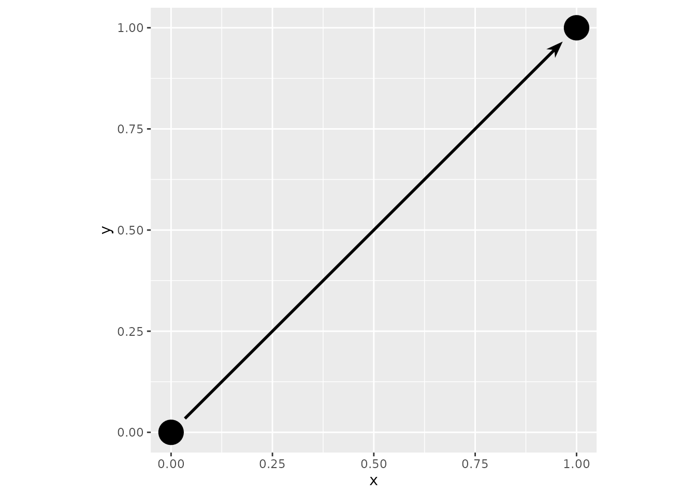
You can make your own arrowheads by supplying the arrow_head parameter a 2-column matrix of polygon points. I’ll make a simple triangle:
triangle <- cbind(x = c(1, 0, 0),
y = c(0, .5, -.5))
base_plot +
geom_arrow(arrow_head = triangle)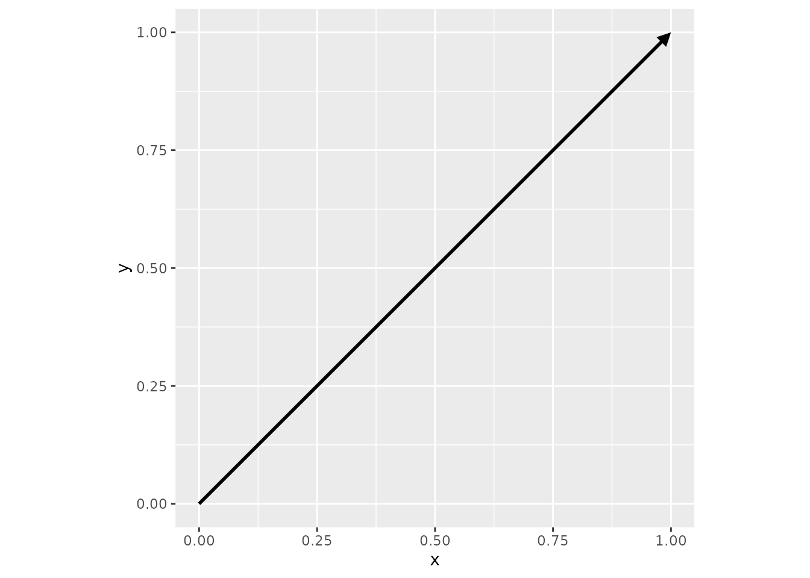
You can make any shape you want. I made arrowheadr to facilitate getting complex shapes into the box that ggarrow functions expect.
The arrowheadr functions do not depend on ggarrow, but were designed to be used with ggarrow. The main arrow_head_* functions return a matrix with columns x and y to create a polygon fitting in a square from −1 to 1 on both the x and y axes.
The main arrow_head_* functions have an optional plot argument to show what polygon will be used:
library(arrowheadr)
my_arrowhead <- arrow_head_deltoid(plot = TRUE)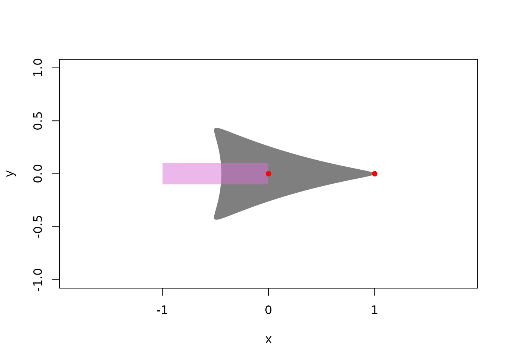
The pink rectangle shows where the arrow’s line will end. Typically, the arrowhead’s point is expected to be at (1,0), but you can do anything you want.
We can now use this output with ggarrow:
base_plot +
geom_arrow(arrow_head = my_arrowhead)Examples with ggdiagram
I use ggarrow mostly for creating path diagrams with my ggdiagram package, which extends ggplot2 capabilities to become more like TikZ.
id <- c("A", "B", "C")
bp <- ggdiagram(font_family = "Roboto Condensed") +
{latent <- ob_circle(
center = ob_polar(theta = degree(c(210, 90, -30)), r = 3),
label = ob_label(
label = id,
size = 60,
nudge_y = -.09,
fill = NA,
color = "gray20"
),
color = NA,
fill = viridis::viridis(
n = 3,
begin = .2,
end = .8,
alpha = .5
),
id = id
)
}
myconnect <- redefault(connect,
from = latent[c("A", "A", "B")],
to = latent[c("B", "C", "C")],
color = "gray20",
resect = 2,
linewidth = 1)
Default Arrowhead from ggarrow
bp + myconnect(arrow_head = ggarrow::arrow_head_wings())Skinny Sharp Deltoid
bp + myconnect(arrow_head = arrow_head_deltoid(d = 2))Skinny Rounded Deltoid
bp + myconnect(arrow_head = arrow_head_deltoid(d = 2.7))Rounded spade
bp + myconnect(arrow_head = arrow_head_deltoid(d = 8))Sharp Barbs
Mimics the latex' arrowhead from tikz.arrows
bp + myconnect(arrow_head = arrow_head_latex())Mimics the regular latex arrowhead from tikz.arrows
bp + myconnect(arrow_head = arrow_head_latex(undercontrols = NULL))Catenary Curve
A catenary curve looks like a parabola, but it describes the curve of a hanging chain.
bp + myconnect(arrow_head = arrow_head_catenary())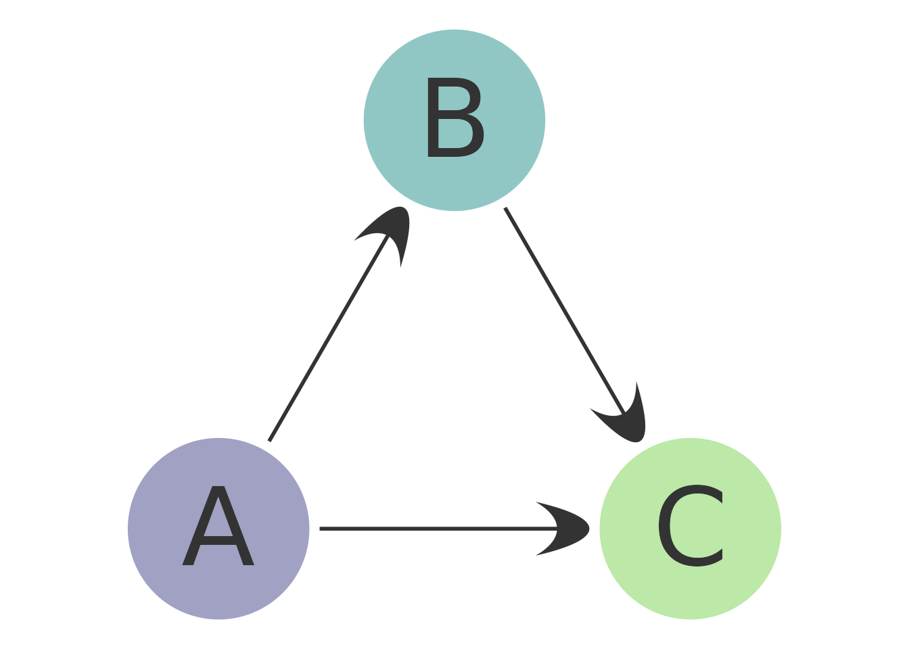
It is possible to play with the thickness at the top of the arch and the width of the base.
bp + myconnect(arrow_head = arrow_head_catenary(
thickness = .5,
base_width = .2,
rescale = c(1, .75)))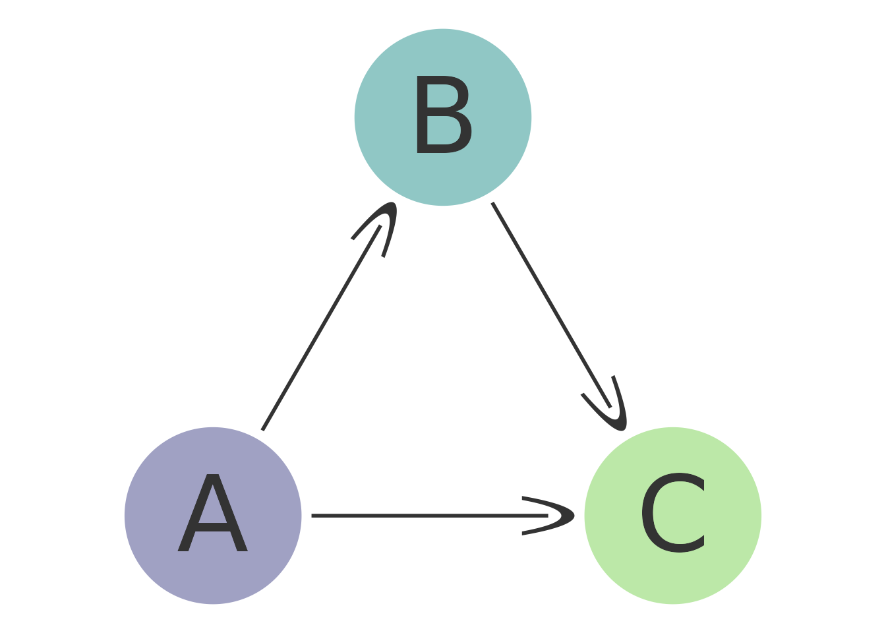
Bezier Curves
A list of bezier control points can make almost any shape.
# A list of bezier curve control points
enterprise <- list(c(1, 0,
.5, .3,
0, .3),
c(0, .3,
.80, -.125,
.075, -.3),
c(.075, -.3,
.5, -.3,
1, 0)) |>
arrow_head_bezier(plot = T)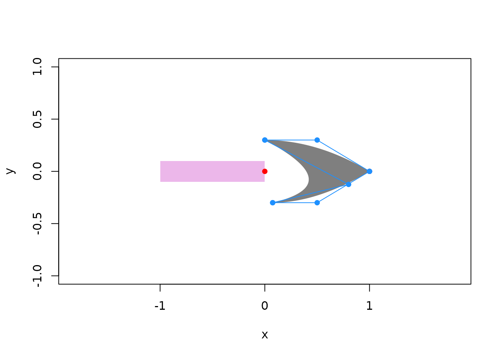
bp + myconnect(arrow_head = enterprise, length_head = 10, linewidth = 1.5)Arrowhead from an arbitrary function
You can make an arrowhead from any function you want. Here is the normal probability density function:
bp + myconnect(arrow_head = arrow_head_function(dnorm))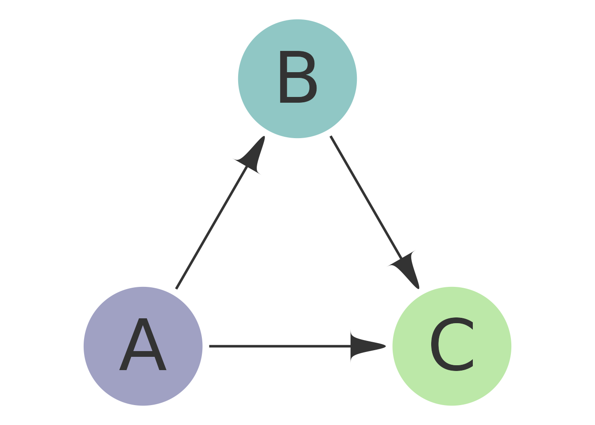
Unitizing
The arrowheads (and fins) in the ggarrow package are expected to fit in a square from in both directions. Sometimes we have data that is well outside that square. The unitizer function makes sure all the data in the matrix fits inside a unit circle (centered at 0 by default).
For example, the shape in Figure 3 will not display properly as an arrowhead in ggarrow because its tip is at (3, 0) instead of (1, 0).
theta <- seq(0, 2 * pi, length.out = 361)
d <- tibble(theta = theta,
x = -sin(theta) + 2 * sin(theta) ^ 2,
y = cos(theta)) |>
select(x,y)
d |>
ggplot(aes(x,y)) +
geom_path() +
coord_equal()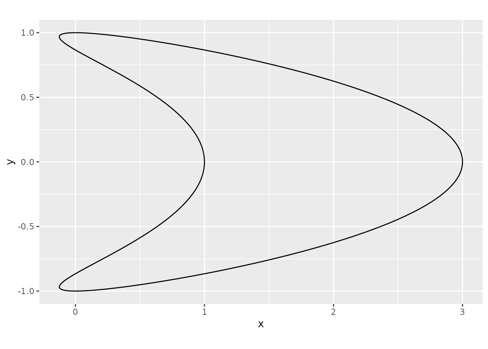
In Figure 4, the shape from Figure 3 is rescaled so that the tip is at point (1, 0).
Nudging
The arrowheads can be nudged in the x and y axes with a length 2 vector. For example, the arrow_head_harpoon function by default is centered on the line, which does not look good.
xy <- arrow_head_harpoon(plot = TRUE)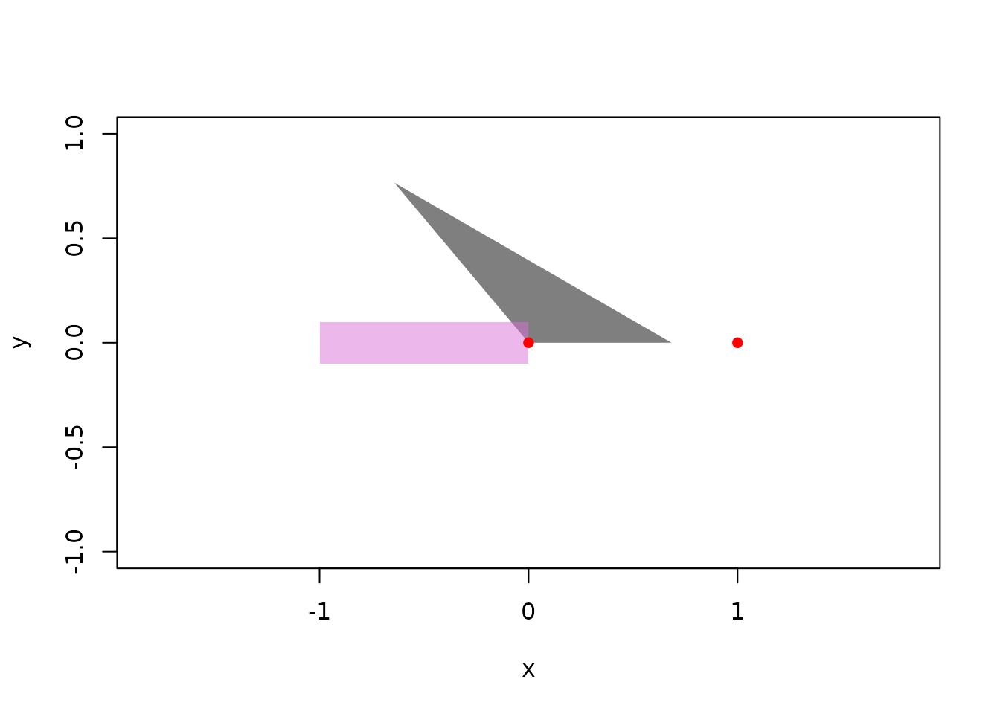
data.frame(x = c(0, 1), y = c(0, 1)) |>
ggplot(aes(x, y)) +
geom_arrow(arrow_head = xy, length_head = 10) +
coord_equal()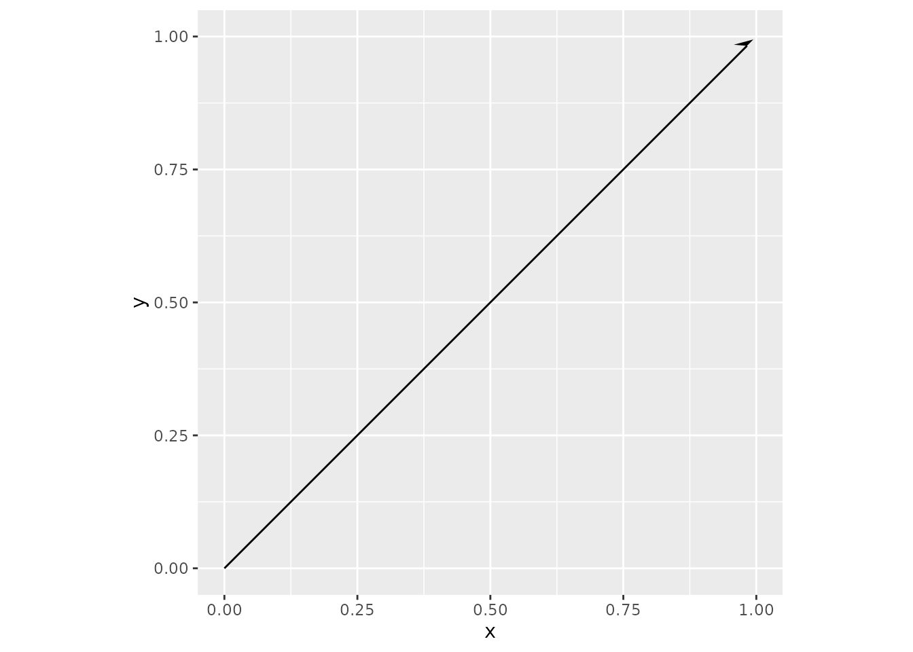
Depending on the linewidth and length_head, we can nudge the harpoon downward so that it looks like a harpoon.
bp + myconnect(arrow_head = arrow_head_harpoon(nudge = c(0, -.06)), length_head = 12)Rescaling
The arrowheads can be rescaled like so:
xy <- arrow_head_latex(rescale = .6, plot = TRUE)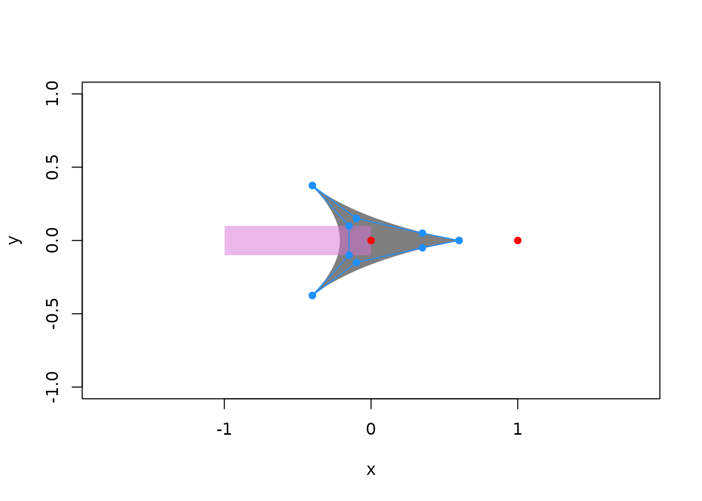
By combining rescaling with nudging, we can separate the arrowhead from the line:
xy <- arrow_head_latex(rescale = .6,
nudge = c(.4, 0),
plot = TRUE)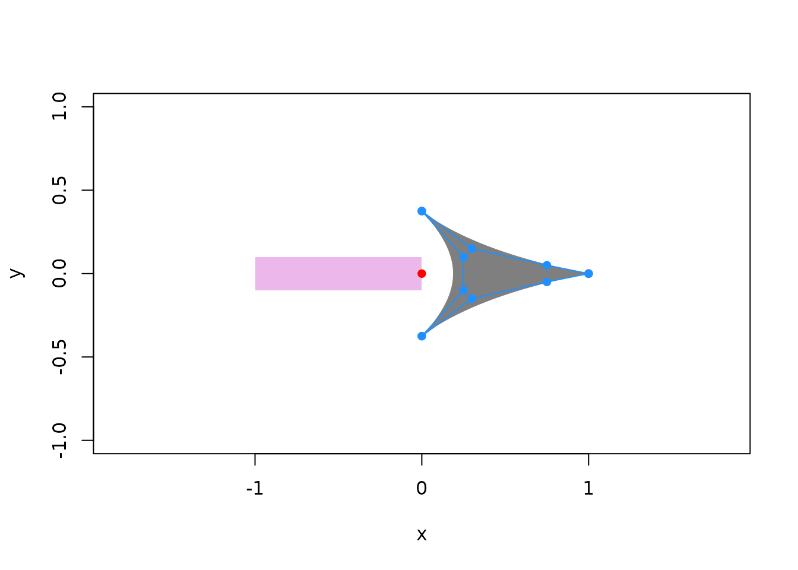
bp + myconnect(arrow_head = xy, length_head = 10)The rescaling can be different on the x and y dimensions. Here we decrease the width by half and increase the height by half.
xy <- arrow_head_latex(rescale = c(.5, 1.5), plot = TRUE)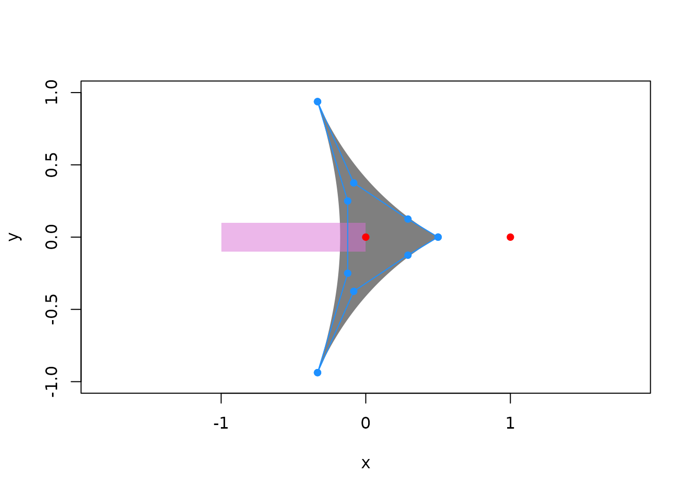
Rotating
Here I put the rotated arrowhead into the head and fin of the arrow. The rotation is in radians, not degrees.
xy <- arrow_head_latex(rotate = pi,
nudge = c(.4, 0),
plot = TRUE)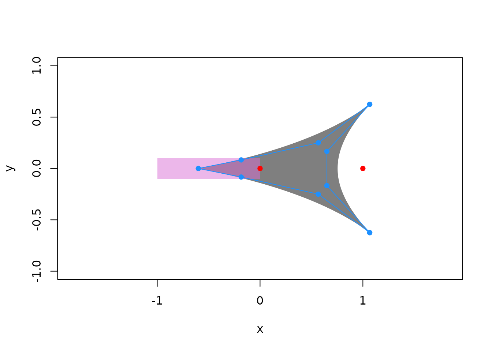
bp + myconnect(arrow_head = xy, arrow_fins = xy, resect = 3)Reflecter function
Because most arrowheads are symmetric, we can design one half of the arrowhead and then duplicate the other half in reverse order. The reflector function takes a matrix, reverses the sign of the y values, and reorders the rows, and adds the reflected matrix to the original matrix.
Here, I supply the bezier controls for just the top half of the arrow, the arrow_head_bezier function creates the polygon points for the top half, and the reflecter function adds the mirror image points below to the polygon symmetric.
Preset arrowheads
The arrowheads object is a list of static, pre-defined arrowheads that I think are useful and/or fun. For example, Figure 5 has a classic “leaf” arrowhead.
bp + myconnect(arrow_head = arrowheads$leaf)Figure 6 has the entire collection of arrowheads in the arrowheads list object.
k <- length(arrowheads)
theta <- degree(seq(0, 360, length.out = k + 1)[-(k + 1)])
ggdiagram() +
connect(ob_point(),
ob_polar(theta),
resect = 5,
arrow_head = arrowheads,
linewidth = 2
) +
ob_label(label = names(arrowheads),
center = ob_polar(theta, r = 1.1),
angle = 0,
hjust = 0.5)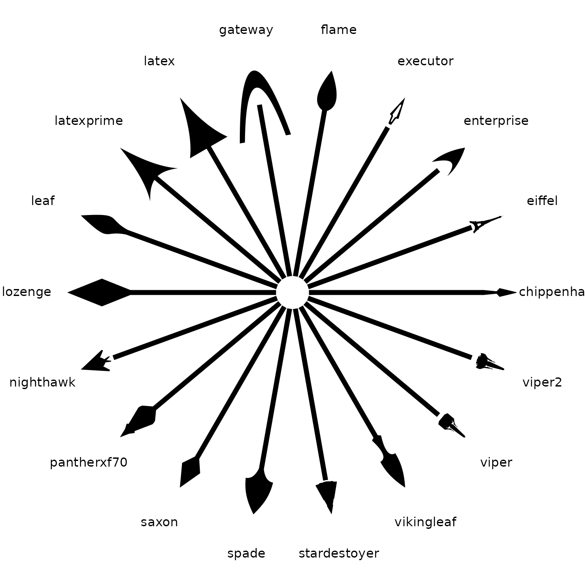
arrowheads collection